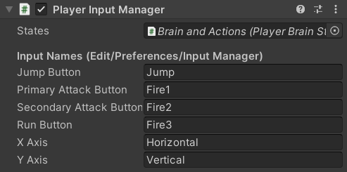
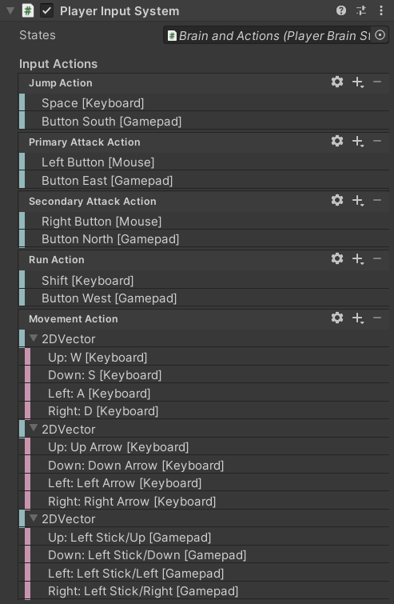

This brain consists of several scripts which control the Character using keyboard and mouse input.
PlayerBrain holds references to the actions the character can perform and manages the Input Buffering but doesn't make any decisions on its own, it's set up to be controlled by another component depending on which system you want to use:
PlayerInputManager |
PlayerInputSystem |
|---|---|
| Uses Unity's inbuilt Input Manager. | Uses Unity's newer Input System package. |
| The Player Input Manager page explains this script. | The Player Input System page explains this script. |
 ThePlayerInputManager is used in the Player prefab by default, but if you want to use the Input System package you can simply remove it and add a PlayerInputSystem component instead. |
 |
Fields
The PlayerBrain script has Serialized Fields to reference CharacterStates for each action the character can perform.
public class PlayerBrain : CharacterBrain
{
[SerializeField, Seconds(Rule = IsNotNegative)] private float _InputBufferTimeOut = 0.5f;
[SerializeField] private CharacterState _Jump;
[SerializeField] private CharacterState _PrimaryAttack;
[SerializeField] private CharacterState _SecondaryAttack;
Note that inheriting from CharacterBrain means it also has the Character reference field from that class.
Input Buffering
Rather than only attempting to perform an action once when a button is pressed, this brain uses Animancer's Input Buffer system to continually attempt the action each frame for a short time so that players have a bit of leeway in timing their button presses for consecutive actions.
private StateMachine<CharacterState>.InputBuffer _InputBuffer;
protected virtual void Awake()
{
_InputBuffer = new StateMachine<CharacterState>.InputBuffer(Character.StateMachine);
}
protected virtual void Update()
{
_InputBuffer.Update();
}
public void Buffer(CharacterState state)
{
if (state == null)
return;
_InputBuffer.Buffer(state, _InputBufferTimeOut);
}
Actions
Returning to the Idle state is used to cancel jumping early and has no reason to be buffered, but the other actions all use the above Buffer method.
public void TryIdle()
=> Character.StateMachine.TrySetDefaultState();
public void TryJump()
=> Buffer(_Jump);
public void TryPrimaryAttack()
=> Buffer(_PrimaryAttack);
public void TrySecondaryAttack()
=> Buffer(_SecondaryAttack);
Those methods are public so that they can be called by the Player Input Manager or Player Input System.